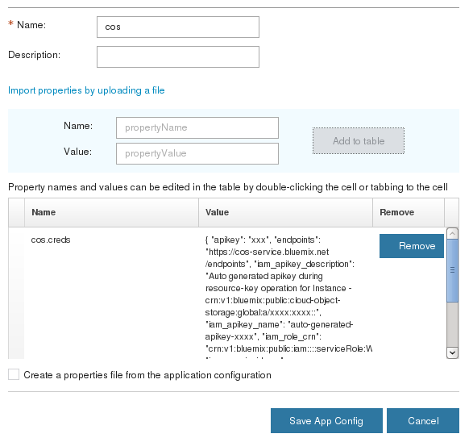

IBMStreams com.ibm.streamsx.objectstorage Toolkit > com.ibm.streamsx.objectstorage 1.4.3 > com.ibm.streamsx.objectstorage > ObjectStorageSink > Supported Authentication Schemes
The operator supports IBM Cloud Identity and Access Management (IAM) and HMAC for authentication.
IAM authentication can be configured with operator parameters or application configuration.
IAM authentication with application configuration
Create IBM Cloud Object Storage Credentials
A service credential provides the necessary information to connect an application to Object Storage packaged in a JSON document. Service credentials are always associated with a Service ID, and new Service IDs can be created along with a new credential.
Use the following steps to create a service credential:
- Log in to the IBM Cloud console and navigate to your instance of Object Storage.
- In the side navigation, click Service Credentials.
- Click New credential and provide the necessary information.
- Click Add to generate service credential.
- Click View credentials and copy JSON into clipboard.
This is an example of a service credential:
{
"apikey": "0viPHOY7LbLNa9eLftrtHPpTjoGv6hbLD1QalRXikliJ",
"endpoints": "https://cos-service.bluemix.net/endpoints",
"iam_apikey_description": "Auto generated apikey during resource-key operation for Instance - crn:v1:bluemix:public:cloud-object-storage:global:a/3ag0e9402tyfd5d29761c3e97696b71n:d6f74k03-6k4f-4a82-b165-697354o63903::",
"iam_apikey_name": "auto-generated-apikey-f9274b63-ef0b-4b4e-a00b-b3bf9023f9dd",
"iam_role_crn": "crn:v1:bluemix:public:iam::::serviceRole:Manager",
"iam_serviceid_crn": "crn:v1:bluemix:public:iam-identity::a/3ag0e9402tyfd5d29761c3e97696b71n::serviceid:ServiceId-540a4a41-7322-4fdd-a9e7-e0cb7ab760f9",
"resource_instance_id": "crn:v1:bluemix:public:cloud-object-storage:global:a/3ag0e9402tyfd5d29761c3e97696b71n:d6f74k03-6k4f-4a82-b165-697354o63903::"
}
Save Credentials in Application Configuration Property
With this option, users can copy their IBM Cloud Object Storage Credentials JSON from the IBM Cloud Object Storage service and store it in an application configuration property called cos.creds. When the operator starts, it will look for that property and extract the information needed to connect. The following steps outline how this can be done:
- Create an application configuration called cos.
- Create a property in the cos application configuration named cos.creds.
- The value of the property should be the raw IBM Cloud Object Storage Credentials JSON
- The value of the property could be pasted from the clipboard if you have done the Create IBM Cloud Object Storage Credentials steps above.
- The operator will automatically look for an application configuration named cos and will extract the information needed to connect.
This is an example of an application configuration in Streams Console:

From the cos.creds JSON the apikey (IAMApiKey) and resource_instance_id (IAMServiceInstanceId) are extracted by the operator. The auth endpoint value (IAMTokenEndpoint) is extracted from the endpoints URL provided as part of the service credentials. With the endpoints URL a JSON is retrieved and /oidc/token is added to end of the iam-token URL to construct the IAMTokenEndpoint.
{
"identity-endpoints": {
"iam-token": "iam.bluemix.net",
"iam-policy": "iampap.bluemix.net"
},
...
IAM authentication with operator parameters
- IAMApiKey
-
IAMServiceInstanceId
-
IAMTokenEndpoint - IAM token endpoint. The default is https://iam.bluemix.net/oidc/token.
The following diagram demonstrates how IAMApiKey and IAMServiceInstanceId can be extracted from the COS service credentials:

HMAC authentication
For HMAC authentication the following authentication parameters should be used:
- objectStorageUser
-
objectStoragePassword
For S3-compliant COS use AccessKeyID for 'objectStorageUser' and SecretAccessKey for 'objectStoragePassword'.